# Load required packages
library(tidyverse)
library(tidycensus)
library(scales)
library(RColorBrewer)
# Set your Census API key if you haven't already
census_api_key("ec702835845a134b4376c60759aa72ce62f6df59")
# We'll use Pennsylvania data for consistency with previous weeks
state_choice <- "PA"Week 3 In-Class Lab: Data Visualization and EDA
Setup and Data Loading
Exercise 0: Finding Census Variable Codes
The Challenge: You know you want data on total population, median income, and median age, but you don’t know the specific Census variable codes. How do you find them?
0.1 Load the Variable Dictionary
# Load all available variables for ACS 5-year 2022
acs_vars_2022 <- load_variables(2022, "acs5", cache = TRUE)
# Look at the structure
glimpse(acs_vars_2022)Rows: 28,152
Columns: 4
$ name <chr> "B01001A_001", "B01001A_002", "B01001A_003", "B01001A_004", …
$ label <chr> "Estimate!!Total:", "Estimate!!Total:!!Male:", "Estimate!!To…
$ concept <chr> "Sex by Age (White Alone)", "Sex by Age (White Alone)", "Sex…
$ geography <chr> "tract", "tract", "tract", "tract", "tract", "tract", "tract…head(acs_vars_2022)# A tibble: 6 × 4
name label concept geography
<chr> <chr> <chr> <chr>
1 B01001A_001 Estimate!!Total: Sex by Age (Whi… tract
2 B01001A_002 Estimate!!Total:!!Male: Sex by Age (Whi… tract
3 B01001A_003 Estimate!!Total:!!Male:!!Under 5 years Sex by Age (Whi… tract
4 B01001A_004 Estimate!!Total:!!Male:!!5 to 9 years Sex by Age (Whi… tract
5 B01001A_005 Estimate!!Total:!!Male:!!10 to 14 years Sex by Age (Whi… tract
6 B01001A_006 Estimate!!Total:!!Male:!!15 to 17 years Sex by Age (Whi… tract What you see:
name: The variable code (e.g., “B01003_001”)label: Human-readable descriptionconcept: The broader table this variable belongs to
0.2 Search for Population Variables
Your Task: Find the variable code for total population.
# Search for population-related variables
population_vars <- acs_vars_2022 %>%
filter(str_detect(label, "Total.*population"))
# Look at the results
head(population_vars, 10)# A tibble: 10 × 4
name label concept geography
<chr> <chr> <chr> <chr>
1 B16008_002 "Estimate!!Total:!!Native population:" Citize… tract
2 B16008_003 "Estimate!!Total:!!Native population:!!5 to 17 … Citize… tract
3 B16008_004 "Estimate!!Total:!!Native population:!!5 to 17 … Citize… tract
4 B16008_005 "Estimate!!Total:!!Native population:!!5 to 17 … Citize… tract
5 B16008_006 "Estimate!!Total:!!Native population:!!5 to 17 … Citize… tract
6 B16008_007 "Estimate!!Total:!!Native population:!!5 to 17 … Citize… tract
7 B16008_008 "Estimate!!Total:!!Native population:!!5 to 17 … Citize… tract
8 B16008_009 "Estimate!!Total:!!Native population:!!5 to 17 … Citize… tract
9 B16008_010 "Estimate!!Total:!!Native population:!!5 to 17 … Citize… tract
10 B16008_011 "Estimate!!Total:!!Native population:!!18 years… Citize… tract # Or search in the concept field
pop_concept <- acs_vars_2022 %>%
filter(str_detect(concept, "Total Population"))
head(pop_concept)# A tibble: 6 × 4
name label concept geography
<chr> <chr> <chr> <chr>
1 B01003_001 Estimate!!Total Total Population block gr…
2 B25008A_001 Estimate!!Total: Total Population in O… block gr…
3 B25008A_002 Estimate!!Total:!!Owner occupied Total Population in O… block gr…
4 B25008A_003 Estimate!!Total:!!Renter occupied Total Population in O… block gr…
5 B25008B_001 Estimate!!Total: Total Population in O… block gr…
6 B25008B_002 Estimate!!Total:!!Owner occupied Total Population in O… block gr…Tip: Look for “Total” followed by “population” - usually B01003_001
0.3 Search for Income Variables
Your Task: Find median household income variables.
# Search for median income
income_vars <- acs_vars_2022 %>%
filter(str_detect(label, "[Mm]edian.*income"))
# Look specifically for household income
household_income <- income_vars %>%
filter(str_detect(label, "household"))
print("Household income variables:")[1] "Household income variables:"head(household_income)# A tibble: 6 × 4
name label concept geography
<chr> <chr> <chr> <chr>
1 B10010_002 Estimate!!Median family income in the past 12 m… Median… tract
2 B10010_003 Estimate!!Median family income in the past 12 m… Median… tract
3 B19013A_001 Estimate!!Median household income in the past 1… Median… tract
4 B19013B_001 Estimate!!Median household income in the past 1… Median… tract
5 B19013C_001 Estimate!!Median household income in the past 1… Median… tract
6 B19013D_001 Estimate!!Median household income in the past 1… Median… tract # Alternative: search by concept
income_concept <- acs_vars_2022 %>%
filter(str_detect(concept, "Median Household Income"))
head(income_concept)# A tibble: 6 × 4
name label concept geography
<chr> <chr> <chr> <chr>
1 B19013A_001 Estimate!!Median household income in the past 1… Median… tract
2 B19013B_001 Estimate!!Median household income in the past 1… Median… tract
3 B19013C_001 Estimate!!Median household income in the past 1… Median… tract
4 B19013D_001 Estimate!!Median household income in the past 1… Median… tract
5 B19013E_001 Estimate!!Median household income in the past 1… Median… county
6 B19013F_001 Estimate!!Median household income in the past 1… Median… tract Pattern Recognition: Median household income is typically B19013_001
0.4 Search for Age Variables
Your Task: Find median age variables.
search for median age
age_vars <- acs_vars_2022 %>%
filter(str_detect(label, "[Mm]edian.*age"))0.5 Advanced Search Techniques
Your Task: Learn more sophisticated search methods.
# Search for multiple terms at once
housing_vars <- acs_vars_2022 %>%
filter(str_detect(label, "[Mm]edian.*(rent|value)"))
print("Housing cost variables:")[1] "Housing cost variables:"head(housing_vars, 10)# A tibble: 10 × 4
name label concept geography
<chr> <chr> <chr> <chr>
1 B07002PR_004 Estimate!!Median age --!!Total:!!Moved from d… Median… <NA>
2 B07002_004 Estimate!!Median age --!!Total:!!Moved from d… Median… tract
3 B07002_005 Estimate!!Median age --!!Total:!!Moved from d… Median… tract
4 B07011PR_004 Estimate!!Median income in the past 12 months… Median… <NA>
5 B07011_004 Estimate!!Median income in the past 12 months… Median… tract
6 B07011_005 Estimate!!Median income in the past 12 months… Median… tract
7 B07402PR_004 Estimate!!Median age --!!Total living in area… Median… <NA>
8 B07402_004 Estimate!!Median age --!!Total living in area… Median… county
9 B07402_005 Estimate!!Median age --!!Total living in area… Median… county
10 B07411PR_004 Estimate!!Median income in the past 12 months… Median… <NA> # Search excluding certain terms
income_not_family <- acs_vars_2022 %>%
filter(str_detect(label, "[Mm]edian.*income") &
!str_detect(label, "family"))
print("Income variables (not family income):")[1] "Income variables (not family income):"head(income_not_family)# A tibble: 6 × 4
name label concept geography
<chr> <chr> <chr> <chr>
1 B06011PR_001 Estimate!!Median income in the past 12 months … Median… <NA>
2 B06011PR_002 Estimate!!Median income in the past 12 months … Median… <NA>
3 B06011PR_003 Estimate!!Median income in the past 12 months … Median… <NA>
4 B06011PR_004 Estimate!!Median income in the past 12 months … Median… <NA>
5 B06011PR_005 Estimate!!Median income in the past 12 months … Median… <NA>
6 B06011_001 Estimate!!Median income in the past 12 months … Median… tract # Case-insensitive search using regex
education_vars <- acs_vars_2022 %>%
filter(str_detect(label, regex("bachelor", ignore_case = TRUE)))
print("Education variables:")[1] "Education variables:"head(education_vars, 5)# A tibble: 5 × 4
name label concept geography
<chr> <chr> <chr> <chr>
1 B06009PR_005 Estimate!!Total:!!Bachelor's degree Place … <NA>
2 B06009PR_011 Estimate!!Total:!!Born in Puerto Rico:!!Bachel… Place … <NA>
3 B06009PR_017 Estimate!!Total:!!Born in the United States:!!… Place … <NA>
4 B06009PR_023 Estimate!!Total:!!Native; born elsewhere:!!Bac… Place … <NA>
5 B06009PR_029 Estimate!!Total:!!Foreign born:!!Bachelor's de… Place … <NA> 0.6 Interactive Exploration
Your Task: Use RStudio’s viewer for easier searching.
# Open the full variable list in RStudio viewer
# This opens a searchable data table
if (interactive()) View(acs_vars_2022)
# Pro tip: You can also search specific table groups
# B01 = Age and Sex
# B19 = Income
# B25 = Housing
table_b19 <- acs_vars_2022 %>%
filter(str_detect(name, "^B19")) # ^ means "starts with"
print("All B19 (Income) table variables:")[1] "All B19 (Income) table variables:"head(table_b19, 10)# A tibble: 10 × 4
name label concept geography
<chr> <chr> <chr> <chr>
1 B19001A_001 Estimate!!Total: Household Income … tract
2 B19001A_002 Estimate!!Total:!!Less than $10,000 Household Income … tract
3 B19001A_003 Estimate!!Total:!!$10,000 to $14,999 Household Income … tract
4 B19001A_004 Estimate!!Total:!!$15,000 to $19,999 Household Income … tract
5 B19001A_005 Estimate!!Total:!!$20,000 to $24,999 Household Income … tract
6 B19001A_006 Estimate!!Total:!!$25,000 to $29,999 Household Income … tract
7 B19001A_007 Estimate!!Total:!!$30,000 to $34,999 Household Income … tract
8 B19001A_008 Estimate!!Total:!!$35,000 to $39,999 Household Income … tract
9 B19001A_009 Estimate!!Total:!!$40,000 to $44,999 Household Income … tract
10 B19001A_010 Estimate!!Total:!!$45,000 to $49,999 Household Income … tract 0.7 Verify Your Variable Choices
Your Task: Test your variables by getting a small sample of data.
# Test the variables you found
test_vars <- c(
total_pop = "B01003_001", # Total population
median_income = "B19013_001", # Median household income
median_age = "B01002_001" # Median age
)
# Get data for just one state to test
test_data <- get_acs(
geography = "state",
variables = test_vars,
state = "PA",
year = 2022
)
# Check that you got what you expected
test_data# A tibble: 3 × 5
GEOID NAME variable estimate moe
<chr> <chr> <chr> <dbl> <dbl>
1 42 Pennsylvania median_age 40.8 0.1
2 42 Pennsylvania total_pop 12989208 NA
3 42 Pennsylvania median_income 73170 347 0.8 Common Variable Patterns
Reference guide for future use:
# Common patterns to remember:
common_variables <- tribble(
~concept, ~typical_code, ~description,
"Total Population", "B01003_001", "Total population",
"Median Age", "B01002_001", "Median age of population",
"Median HH Income", "B19013_001", "Median household income",
"White Population", "B03002_003", "White alone population",
"Black Population", "B03002_004", "Black/African American alone",
"Hispanic Population", "B03002_012", "Hispanic or Latino population",
"Bachelor's Degree", "B15003_022", "Bachelor's degree or higher",
"Median Rent", "B25058_001", "Median contract rent",
"Median Home Value", "B25077_001", "Median value owner-occupied"
)
print("Common Census Variables:")[1] "Common Census Variables:"common_variables# A tibble: 9 × 3
concept typical_code description
<chr> <chr> <chr>
1 Total Population B01003_001 Total population
2 Median Age B01002_001 Median age of population
3 Median HH Income B19013_001 Median household income
4 White Population B03002_003 White alone population
5 Black Population B03002_004 Black/African American alone
6 Hispanic Population B03002_012 Hispanic or Latino population
7 Bachelor's Degree B15003_022 Bachelor's degree or higher
8 Median Rent B25058_001 Median contract rent
9 Median Home Value B25077_001 Median value owner-occupied Key Tips for Variable Hunting:
- Start with concepts - search for the topic you want (income, age, housing)
- Look for “Median” vs “Mean” - median is usually more policy-relevant
- Check the universe - some variables are for “households,” others for “population”
- Test with small data before running large queries
- Bookmark useful variables for future projects (type them in your weekly notes!)
Exercise 1: Single Variable EDA
1.1 Load and Inspect Data
# Get county-level data for your state
county_data <- get_acs(
geography = "county",
variables = c(
total_pop = "B01003_001", # Total population
median_income = "B19013_001", # Median household income
median_age = "B01002_001" # Median age
),
state = state_choice,
year = 2022,
output = "wide"
)
# Clean county names
county_data <- county_data %>%
mutate(county_name = str_remove(NAME, paste0(", Pennsylvania")))
# Basic inspection
glimpse(county_data)Rows: 67
Columns: 9
$ GEOID <chr> "42001", "42003", "42005", "42007", "42009", "42011", "…
$ NAME <chr> "Adams County, Pennsylvania", "Allegheny County, Pennsy…
$ total_popE <dbl> 104604, 1245310, 65538, 167629, 47613, 428483, 122640, …
$ total_popM <dbl> NA, NA, NA, NA, NA, NA, NA, NA, NA, NA, NA, NA, NA, NA,…
$ median_incomeE <dbl> 78975, 72537, 61011, 67194, 58337, 74617, 59386, 60650,…
$ median_incomeM <dbl> 3334, 869, 2202, 1531, 2606, 1191, 2058, 2167, 1516, 21…
$ median_ageE <dbl> 43.8, 40.6, 47.0, 44.9, 47.3, 39.9, 42.9, 43.9, 44.0, 4…
$ median_ageM <dbl> 0.2, 0.1, 0.2, 0.1, 0.2, 0.2, 0.2, 0.2, 0.2, 0.2, 0.2, …
$ county_name <chr> "Adams County", "Allegheny County", "Armstrong County",…1.2 Explore Income Distribution
Your Task: Create a histogram of median household income and describe what you see.
# Create histogram of median income
ggplot(county_data) +
aes(x = median_incomeE) +
geom_histogram(bins = 15, fill = "lightpink", alpha = 0.5) +
labs(
title = "Distribution of Median Household Income",
x = "Median Household Income ($)",
y = "Number of Counties"
) +
theme_minimal() +
scale_x_continuous(labels = dollar)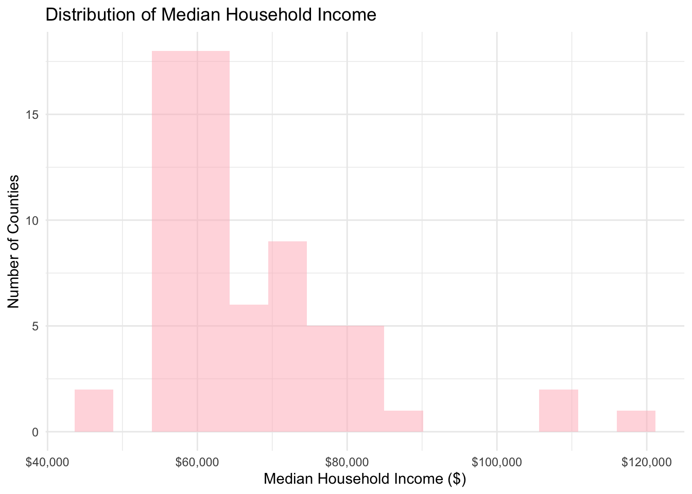
1.3 Box Plot for Outlier Detection
Your Task: Create a boxplot to identify specific outlier counties.
# Box plot to see outliers clearly
ggplot(county_data) +
aes(y = median_incomeE) +
geom_boxplot(fill = "lightpink", width = 0.5) +
labs(
title = "Median Income Distribution with Outliers",
y = "Median Household Income ($)"
) +
theme_minimal() +
scale_y_continuous(labels = dollar)
# Identify the outlier counties
income_outliers <- county_data %>%
mutate(
Q1 = quantile(median_incomeE, 0.25, na.rm = TRUE),
Q3 = quantile(median_incomeE, 0.75, na.rm = TRUE),
IQR = Q3 - Q1,
outlier = median_incomeE < (Q1 - 1.5 * IQR) | median_incomeE > (Q3 + 1.5 * IQR)
) %>%
filter(outlier) %>%
select(county_name, median_incomeE)
print("Outlier counties:")[1] "Outlier counties:"income_outliers# A tibble: 3 × 2
county_name median_incomeE
<chr> <dbl>
1 Bucks County 107826
2 Chester County 118574
3 Montgomery County 1074411.4 Challenge Exercise: Population Distribution
Your Task: Create your own visualization of population distribution and identify outliers.
Requirements:
- Create a histogram of total population (
total_popE) - Use a different color than the income example (try “darkgreen” or “purple”)
- Add appropriate labels and title
- Create a boxplot to identify population outliers
- Find and list the 3 most populous and 3 least populous counties
# Create histogram of total population
ggplot(county_data) +
aes(x = total_popE) +
geom_histogram(bins = 15, fill = "lightpink", alpha = 0.7) +
labs(
title = "Total Population Distribution",
x = "Population",
y = "Number of Counties"
) +
theme_minimal() +
scale_x_continuous(labels=comma)
# Box plot to see outliers clearly
ggplot(county_data) +
aes(y = total_popE) +
geom_boxplot(fill = "lightpink", width = 0.5) +
labs(
title = "Total population distribution with Outliers",
y = "Population"
) +
theme_minimal() +
scale_y_continuous(labels=comma)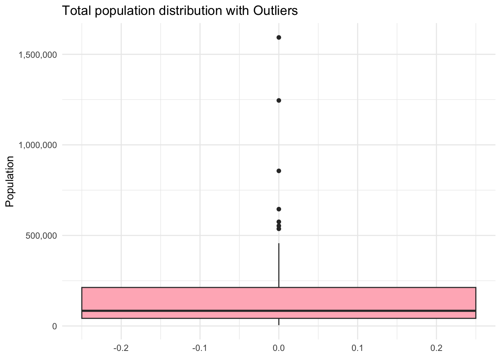
# Identify the outlier counties
population_outliers <- county_data %>%
mutate(
Q1 = quantile(total_popE, 0.25, na.rm = TRUE),
Q3 = quantile(total_popE, 0.75, na.rm = TRUE),
IQR = Q3 - Q1,
outlier = total_popE < (Q1 - 1.5 * IQR) | total_popE > (Q3 + 1.5 * IQR)
) %>%
filter(outlier) %>%
select(county_name, total_popE)
print("Outlier counties:")[1] "Outlier counties:"population_outliers# A tibble: 7 × 2
county_name total_popE
<chr> <dbl>
1 Allegheny County 1245310
2 Bucks County 645163
3 Chester County 536474
4 Delaware County 575312
5 Lancaster County 553202
6 Montgomery County 856399
7 Philadelphia County 1593208Exercise 2: Two Variable Relationships
2.1 Population vs Income Scatter Plot
Your Task: Explore the relationship between population size and median income.
# Basic scatter plot
ggplot(county_data) +
aes(x = total_popE, y = median_incomeE) +
geom_point() +
labs(
title = "Population vs Median Income",
x = "Total Population",
y = "Median Household Income ($)"
) +
theme_minimal() +
scale_x_continuous(labels = comma) +
scale_y_continuous(labels = dollar)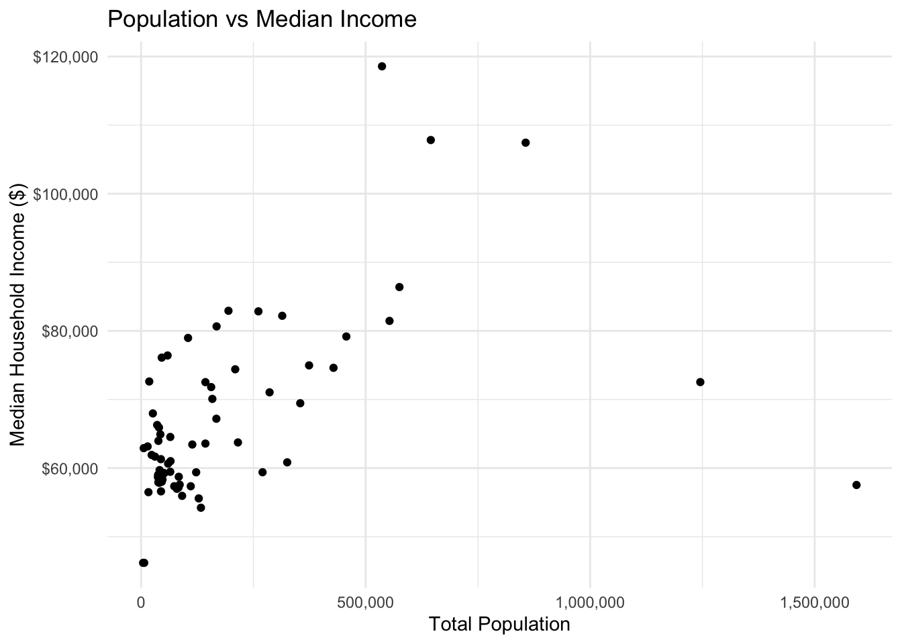
2.2 Add Trend Line and Labels
Your Task: Improve the plot by adding a trend line and labeling interesting points.
# Enhanced scatter plot with trend line
ggplot(county_data) +
aes(x = total_popE, y = median_incomeE) +
geom_point(alpha = 0.7) +
geom_smooth(method = "lm", se = TRUE, color = "lightpink") +
labs(
title = "Population vs Median Income in Pennsylvania Counties",
subtitle = "2018-2022 ACS 5-Year Estimates",
x = "Total Population",
y = "Median Household Income ($)",
caption = "Source: U.S. Census Bureau"
) +
theme_minimal() +
scale_x_continuous(labels = comma) +
scale_y_continuous(labels = dollar)
# Calculate correlation
correlation <- cor(county_data$total_popE, county_data$median_incomeE, use = "complete.obs")
print(paste("Correlation coefficient:", round(correlation, 3)))[1] "Correlation coefficient: 0.457"2.3 Deal with Skewed Data
Your Task: The population data is highly skewed. Try a log transformation.
# Log-transformed scatter plot
ggplot(county_data) +
aes(x = log(total_popE), y = median_incomeE) +
geom_point(alpha = 0.7) +
geom_smooth(method = "lm", se = TRUE) +
labs(
title = "Log(Population) vs Median Income",
x = "Log(Total Population)",
y = "Median Household Income ($)"
) +
theme_minimal() +
scale_y_continuous(labels = dollar)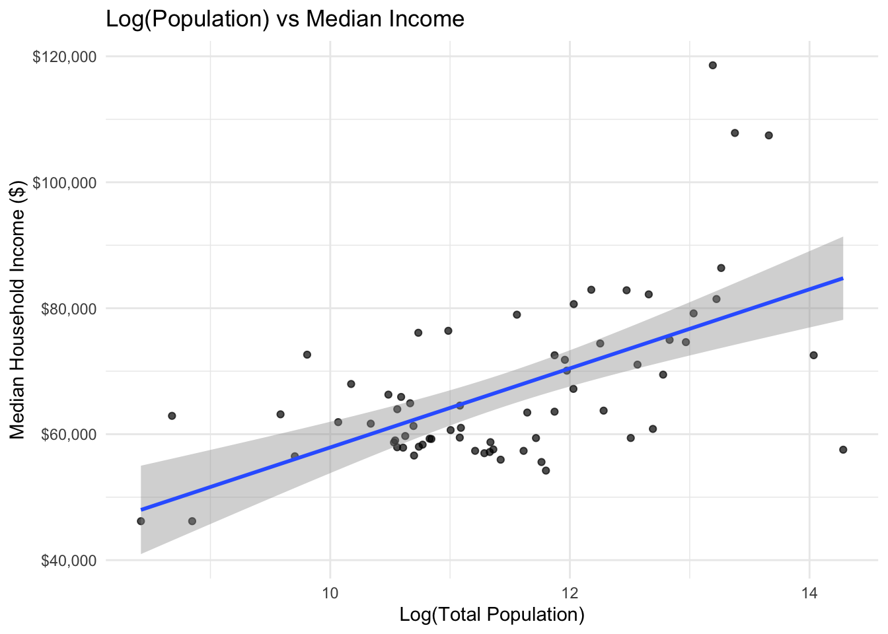
Question: Does the log transformation reveal a clearer relationship? Yes. It’s a positive slope, it suggests that more populous counties tend to have higher median household incomes.
2.4 Challenge Exercise: Age vs Income Relationship
Your Task: Explore the relationship between median age and median income using different visualization techniques.
Requirements:
- Create a scatter plot with median age on x-axis and median income on y-axis
- Use red points (
color = "red") with 50% transparency (alpha = 0.5) - Add a smooth trend line using
method = "loess"instead of “lm” - Use the “dark” theme (
theme_dark()) - Format the y-axis with dollar signs
- Add a title that mentions both variables
# Enhanced scatter plot with trend line
ggplot(county_data) +
aes(x = median_ageE, y = median_incomeE) +
geom_point(alpha = 0.5, color = "red") +
geom_smooth(method = "loess", se = TRUE, color = "red") +
labs(
title = "Median Age vs Median Income in Pennsylvania Counties",
subtitle = "2018-2022 ACS 5-Year Estimates",
x = "Median Age",
y = "Median Household Income ($)",
caption = "Source: U.S. Census Bureau"
) +
theme_dark() +
scale_x_continuous(labels = comma) +
scale_y_continuous(labels = dollar)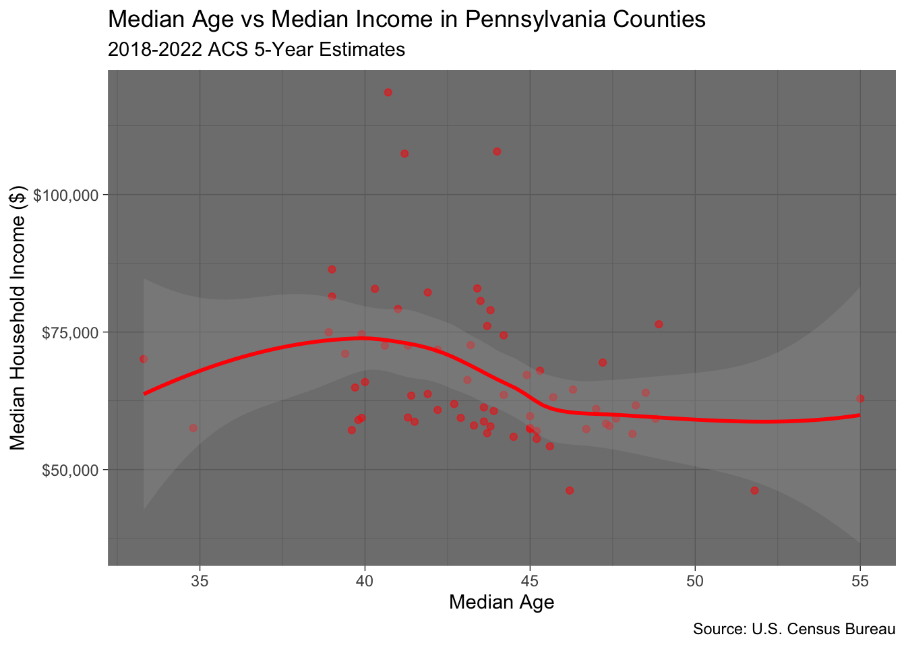
# Calculate correlation
correlation <- cor(county_data$total_popE, county_data$median_incomeE, use = "complete.obs")
print(paste("Correlation coefficient:", round(correlation, 3)))[1] "Correlation coefficient: 0.457"Exercise 3: Data Quality Visualization
3.1 Visualize Margins of Error
Your Task: Create a visualization showing how data reliability varies across counties.
# Calculate MOE percentages
county_reliability <- county_data %>%
mutate(
income_moe_pct = (median_incomeM / median_incomeE) * 100,
pop_category = case_when(
total_popE < 50000 ~ "Small (<50K)",
total_popE < 200000 ~ "Medium (50K-200K)",
TRUE ~ "Large (200K+)"
)
)
# MOE by population size
ggplot(county_reliability) +
aes(x = total_popE, y = income_moe_pct) +
geom_point(alpha = 0.7) +
geom_hline(yintercept = 10, color = "red", linetype = "dashed") +
labs(
title = "Data Reliability Decreases with Population Size",
x = "Total Population",
y = "Margin of Error (%)",
caption = "Red line = 10% reliability threshold"
) +
theme_minimal() +
scale_x_continuous(labels = scales::comma)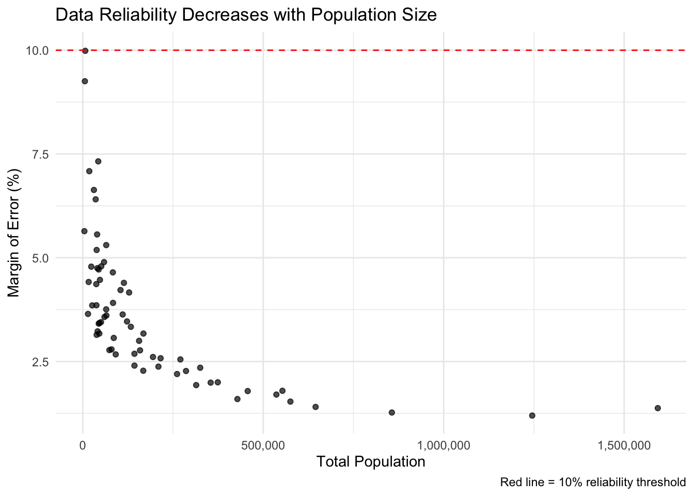
3.2 Compare Reliability by County Size
Your Task: Use box plots to compare MOE across county size categories.
# Box plots by population category
ggplot(county_reliability) +
aes(x = pop_category, y = income_moe_pct, fill = pop_category) +
geom_boxplot() +
labs(
title = "Data Reliability by County Size Category",
x = "Population Category",
y = "Margin of Error (%)"
) +
theme_minimal() +
theme(legend.position = "none") # Remove legend since x-axis is clear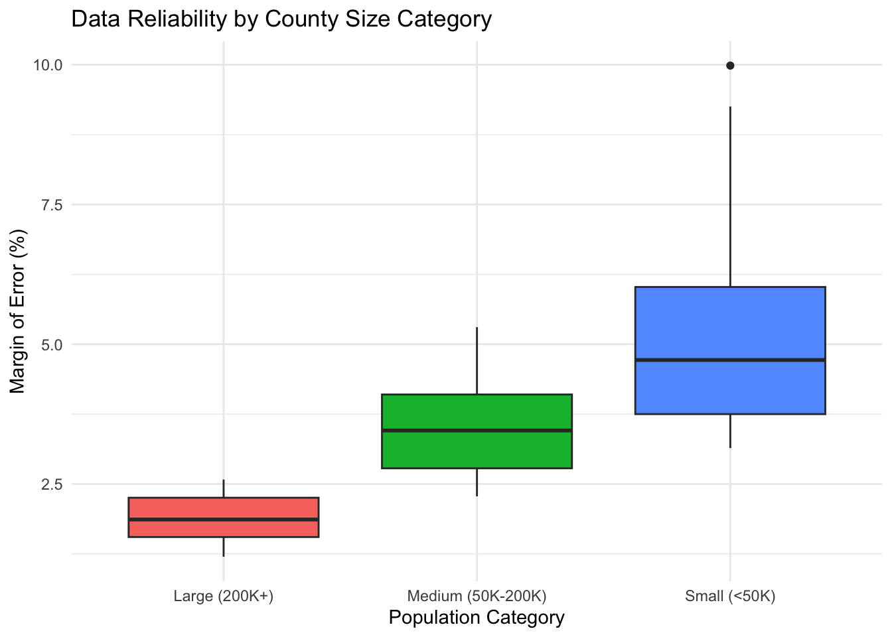
3.3 Challenge Exercise: Age Data Reliability
Your Task: Analyze the reliability of median age data across counties.
Requirements:
- Calculate MOE percentage for median age (
median_ageM / median_ageE * 100) - Create a scatter plot showing population vs age MOE percentage
- Use purple points (
color = "purple") with size = 2 - Add a horizontal line at 5% MOE using
geom_hline()with a blue dashed line - Use
theme_classic()instead oftheme_minimal() - Create a boxplot comparing age MOE across the three population categories
# Calculate MOE percentages
county_reliability <- county_data %>%
mutate(
age_moe_pct = (median_ageM / median_ageE) * 100,
pop_category = case_when(
median_ageE < 40 ~ "Small (<40)",
median_ageE < 50 ~ "Medium (40-50)",
TRUE ~ "Large (>50)"
)
)
# MOE by population size
ggplot(county_reliability) +
aes(x = median_ageE, y = age_moe_pct) +
geom_point(alpha = 0.7, color = "purple",size = 2) +
geom_hline(yintercept = 5, color = "blue", linetype = "dashed",size = 0.5 ) +
labs(
title = "Data Reliability of median age data across
counties.",
x = "Median Age",
y = "Margin of Error (%)",
caption = "Red line = 5% reliability threshold"
) +
theme_classic() +
scale_x_continuous(labels = comma)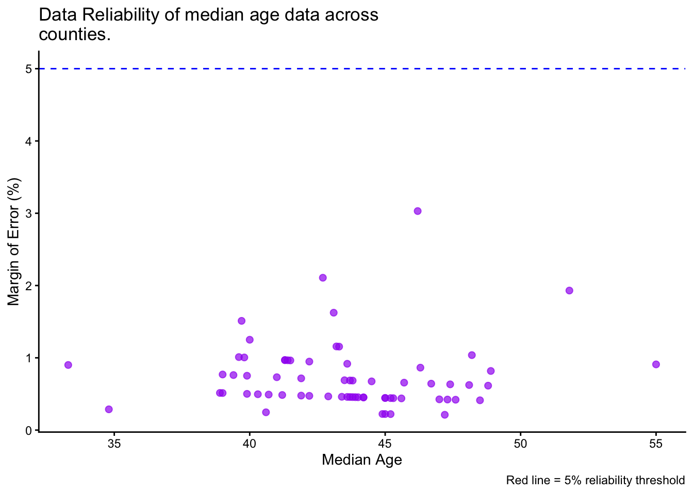
# Box plots by population category
ggplot(county_reliability) +
aes(x = pop_category, y = age_moe_pct, fill = pop_category) +
geom_boxplot() +
labs(
title = "age MOE across the three population categories",
x = "Population Category",
y = "Margin of Error (%)"
) +
theme_minimal() +
theme(legend.position = "none") # Remove legend since x-axis is clear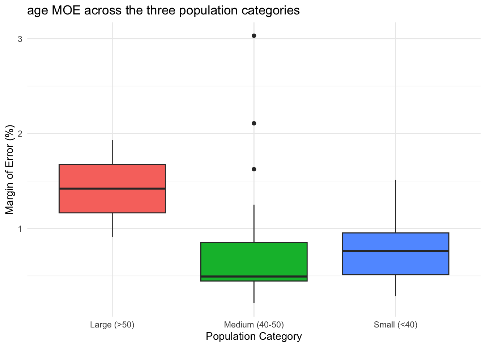
Exercise 4: Multiple Variables with Color and Faceting
4.1 Three-Variable Scatter Plot
Your Task: Add median age as a color dimension to the population-income relationship.
# Three-variable scatter plot
ggplot(county_data) +
aes(x = total_popE, y = median_incomeE, color = median_ageE) +
geom_point(size = 2, alpha = 0.7) +
scale_color_viridis_c(name = "Median\nAge") +
labs(
title = "Population, Income, and Age Patterns",
x = "Total Population",
y = "Median Household Income ($)"
) +
theme_minimal() +
scale_x_continuous(labels = comma) +
scale_y_continuous(labels = dollar)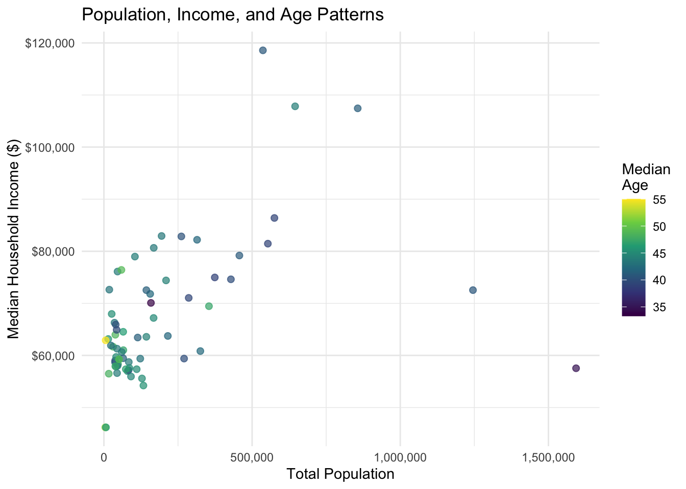
4.2 Create Categories for Faceting
Your Task: Create age categories and use faceting to compare patterns.
# Create age categories and faceted plot
county_faceted <- county_data %>%
mutate(
age_category = case_when(
median_ageE < 40 ~ "Young (< 40)",
median_ageE < 45 ~ "Middle-aged (40-45)",
TRUE ~ "Older (45+)"
)
)
ggplot(county_faceted) +
aes(x = total_popE, y = median_incomeE) +
geom_point(alpha = 0.7) +
geom_smooth(method = "lm", se = FALSE) +
facet_wrap(~age_category) +
labs(
title = "Population-Income Relationship by Age Profile",
x = "Total Population",
y = "Median Income ($)"
) +
theme_minimal() +
scale_x_continuous(labels = comma) +
scale_y_continuous(labels = dollar)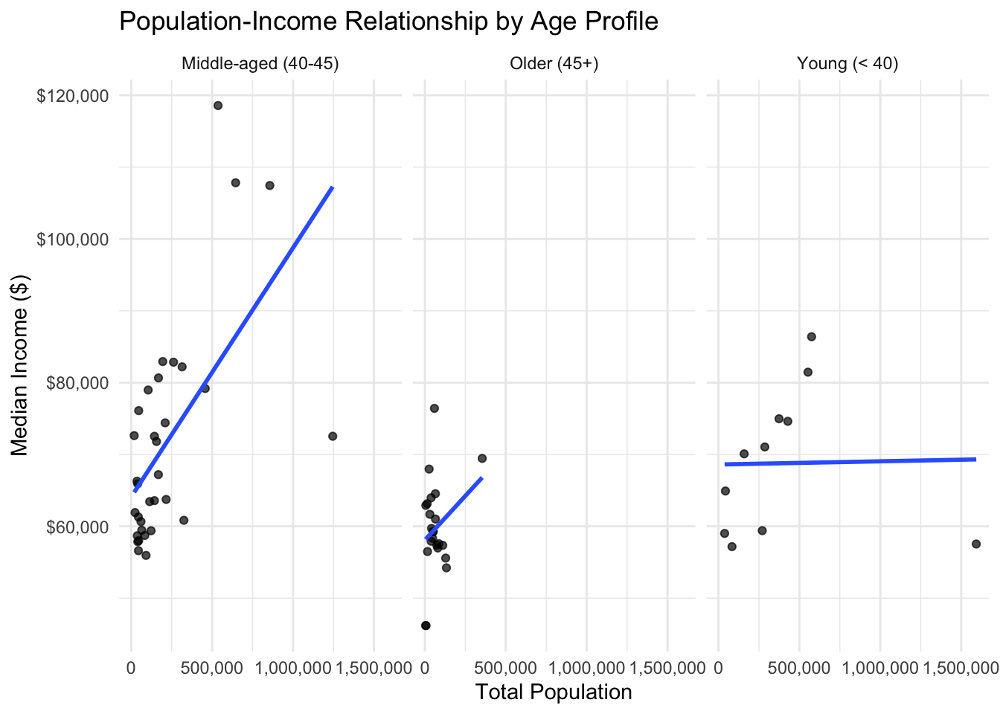
Question: Do the relationships between population and income differ by age profile? Yes
Your Task: Create a visualization using income categories and multiple aesthetic mappings.
Requirements:
- Create income categories: “Low” (<$50k), “Middle” ($50k-$80k), “High” (>$80k)
- Make a scatter plot with population (x) vs median age (y) - Color points by income category
- Size points by the margin of error for income (
median_incomeM) - Use the “Set2” color palette:
scale_color_brewer(palette = "Set2")**note: you’ll need to load theRColorBrewerpackage for this` - Facet by income category using
facet_wrap() - Use
theme_bw()theme
# Create income categories
county_income_plot <- county_data %>%
mutate(
income_cat = case_when(
median_incomeE < 50000 ~ "Low (<$50K)",
median_incomeE < 80000 ~ "Middle ($50K–$80K)",
TRUE ~ "High (>$80K)"
)
)
# Scatter plot
ggplot(county_income_plot) +
aes(
x = total_popE,
y = median_ageE,
color = income_cat,
size = median_incomeM
) +
geom_point(alpha = 0.7) +
scale_color_brewer(palette = "Set2", name = "Income Category") +
scale_size_continuous(name = "Income MOE") +
labs(
title = "Population vs Median Age by Income Category",
x = "Total Population",
y = "Median Age"
) +
facet_wrap(~ income_cat) +
theme_bw() +
theme(axis.text.x = element_text(angle = 45, hjust = 1))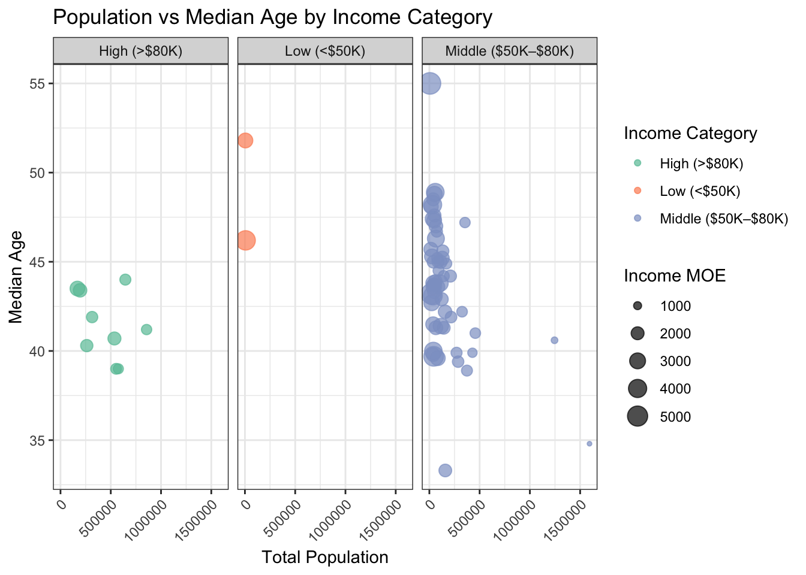
scale_x_continuous(labels = scales::comma)<ScaleContinuousPosition>
Range:
Limits: 0 -- 1Exercise 5: Data Joins and Integration
5.1 Get Additional Census Data
Your Task: Load educational attainment data and join it with our existing data.
# Get educational attainment data
education_data <- get_acs(
geography = "county",
variables = c(
total_25plus = "B15003_001", # Total population 25 years and over
bachelor_plus = "B15003_022" # Bachelor's degree or higher
),
state = state_choice,
year = 2022,
output = "wide"
) %>%
mutate(
pct_college = (bachelor_plusE / total_25plusE) * 100,
county_name = str_remove(NAME, paste0(", ", state_choice))
) %>%
select(GEOID, county_name, pct_college)
# Check the data
head(education_data)# A tibble: 6 × 3
GEOID county_name pct_college
<chr> <chr> <dbl>
1 42001 Adams County, Pennsylvania 13.9
2 42003 Allegheny County, Pennsylvania 25.4
3 42005 Armstrong County, Pennsylvania 12.7
4 42007 Beaver County, Pennsylvania 18.3
5 42009 Bedford County, Pennsylvania 9.73
6 42011 Berks County, Pennsylvania 17.2 5.2 Join the Datasets
Your Task: Join the education data with our main county dataset.
# Perform the join
combined_data <- county_data %>%
left_join(education_data, by = "GEOID")
# Check the join worked
cat("Original data rows:", nrow(county_data), "\n")Original data rows: 67 cat("Combined data rows:", nrow(combined_data), "\n")Combined data rows: 67 cat("Missing education data:", sum(is.na(combined_data$pct_college)), "\n")Missing education data: 0 # View the combined data
head(combined_data)# A tibble: 6 × 11
GEOID NAME total_popE total_popM median_incomeE median_incomeM median_ageE
<chr> <chr> <dbl> <dbl> <dbl> <dbl> <dbl>
1 42001 Adams C… 104604 NA 78975 3334 43.8
2 42003 Alleghe… 1245310 NA 72537 869 40.6
3 42005 Armstro… 65538 NA 61011 2202 47
4 42007 Beaver … 167629 NA 67194 1531 44.9
5 42009 Bedford… 47613 NA 58337 2606 47.3
6 42011 Berks C… 428483 NA 74617 1191 39.9
# ℹ 4 more variables: median_ageM <dbl>, county_name.x <chr>,
# county_name.y <chr>, pct_college <dbl>5.3 Analyze the New Relationship
Your Task: Explore the relationship between education and income.
# Education vs Income scatter plot
ggplot(combined_data) +
aes(x = pct_college, y = median_incomeE) +
geom_point(alpha = 0.7) +
geom_smooth(method = "lm", se = TRUE) +
labs(
title = "Education vs Income Across Counties",
x = "Percent with Bachelor's Degree or Higher",
y = "Median Household Income ($)"
) +
theme_minimal() +
scale_y_continuous(labels = dollar)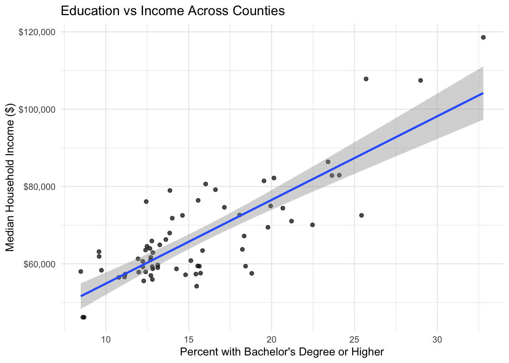
# Calculate correlation
edu_income_cor <- cor(combined_data$pct_college, combined_data$median_incomeE, use = "complete.obs")
print(paste("Education-Income Correlation:", round(edu_income_cor, 3)))[1] "Education-Income Correlation: 0.811"5.4 Get Housing Data and Triple Join
Your Task: Add housing cost data to create a three-way analysis.
# Get housing cost data
housing_data <- get_acs(
geography = "county",
variables = c(
median_rent = "B25058_001", # Median contract rent
median_home_value = "B25077_001" # Median value of owner-occupied units
),
state = state_choice,
year = 2022,
output = "wide"
) %>%
select(GEOID, median_rent = median_rentE, median_home_value = median_home_valueE)
# Join all three datasets
full_data <- combined_data %>%
left_join(housing_data, by = "GEOID")
# Create a housing affordability measure
full_data <- full_data %>%
mutate(
rent_to_income = (median_rent * 12) / median_incomeE * 100,
income_category = case_when(
median_incomeE < 50000 ~ "Low Income",
median_incomeE < 80000 ~ "Middle Income",
TRUE ~ "High Income"
)
)
head(full_data)# A tibble: 6 × 15
GEOID NAME total_popE total_popM median_incomeE median_incomeM median_ageE
<chr> <chr> <dbl> <dbl> <dbl> <dbl> <dbl>
1 42001 Adams C… 104604 NA 78975 3334 43.8
2 42003 Alleghe… 1245310 NA 72537 869 40.6
3 42005 Armstro… 65538 NA 61011 2202 47
4 42007 Beaver … 167629 NA 67194 1531 44.9
5 42009 Bedford… 47613 NA 58337 2606 47.3
6 42011 Berks C… 428483 NA 74617 1191 39.9
# ℹ 8 more variables: median_ageM <dbl>, county_name.x <chr>,
# county_name.y <chr>, pct_college <dbl>, median_rent <dbl>,
# median_home_value <dbl>, rent_to_income <dbl>, income_category <chr>5.5 Advanced Multi-Variable Analysis
Your Task: Create a comprehensive visualization showing multiple relationships.
# Complex multi-variable plot
ggplot(full_data) +
aes(x = pct_college, y = rent_to_income,
color = income_category, size = total_popE) +
geom_point(alpha = 0.7) +
labs(
title = "Education, Housing Affordability, and Income Patterns",
subtitle = "Larger points = larger population",
x = "Percent with Bachelor's Degree or Higher",
y = "Annual Rent as % of Median Income",
color = "Income Category",
size = "Population"
) +
theme_minimal() +
guides(size = guide_legend(override.aes = list(alpha = 1)))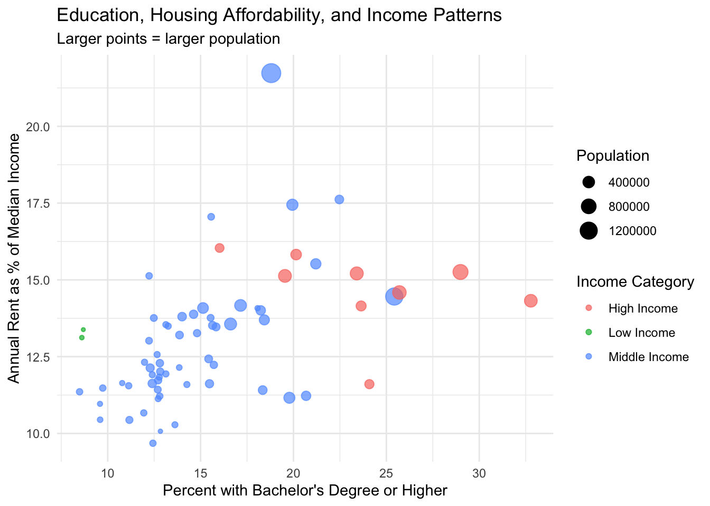
Exercise 6: Publication-Ready Visualization
6.1 Create a Policy-Focused Visualization
Your Task: Combine multiple visualizations to tell a more complete story about county characteristics.
# Create a multi-panel figure
library(patchwork) # For combining plots
# Plot 1: Income distribution
p1 <- ggplot(full_data) +
aes(x = median_incomeE) +
geom_histogram(bins = 15, fill = "steelblue", alpha = 0.7) +
labs(title = "A) Income Distribution",
x = "Median Income ($)", y = "Counties") +
scale_x_continuous(labels = dollar) +
theme_minimal()
# Plot 2: Education vs Income
p2 <- ggplot(full_data) +
aes(x = pct_college, y = median_incomeE) +
geom_point(alpha = 0.7) +
geom_smooth(method = "lm", se = FALSE) +
labs(title = "B) Education vs Income",
x = "% College Educated", y = "Median Income ($)") +
scale_y_continuous(labels = dollar) +
theme_minimal()
# Plot 3: Housing affordability by income category
p3 <- ggplot(full_data) +
aes(x = income_category, y = rent_to_income, fill = income_category) +
geom_boxplot() +
labs(title = "C) Housing Affordability by Income",
x = "Income Category", y = "Rent as % of Income") +
theme_minimal() +
theme(legend.position = "none")
# Plot 4: Data reliability by population
p4 <- ggplot(
county_data %>%
mutate(income_moe_pct = (median_incomeM / median_incomeE) * 100)
) +
aes(x = total_popE, y = income_moe_pct) +
geom_point(alpha = 0.7) +
geom_hline(yintercept = 10, color = "red", linetype = "dashed") +
labs(title = "D) Data Reliability",
x = "Population", y = "MOE (%)") +
scale_x_continuous(labels = comma) +
theme_minimal()
# Combine all plots
combined_plot <- (p1 | p2) / (p3 | p4)
combined_plot + plot_annotation(
title = "Pennsylvania County Analysis: Income, Education, and Housing Patterns",
caption = "Source: American Community Survey 2018-2022"
)
Exercise 7: Ethical Data Communication - Implementing Research Recommendations
Background: Research by Jurjevich et al. (2018) found that only 27% of planners warn users about unreliable ACS data, violating AICP ethical standards. In this exercise, you’ll practice the five research-based guidelines for ethical ACS data communication.
7.1 Create Professional Data Tables with Uncertainty
Your Task: Follow the Jurjevich et al. guidelines to create an ethical data presentation.
# Get comprehensive data for ethical analysis
ethical_demo_data <- get_acs(
geography = "county",
variables = c(
median_income = "B19013_001", # Median household income
total_25plus = "B15003_001", # Total population 25 years and over
bachelor_plus = "B15003_022", # Bachelor's degree or higher
total_pop = "B01003_001" # Total population
),
state = state_choice,
year = 2022,
output = "wide"
) %>%
mutate(
# Calculate derived statistics
pct_college = (bachelor_plusE / total_25plusE) * 100,
# Calculate MOE for percentage using error propagation
pct_college_moe = pct_college * sqrt((bachelor_plusM/bachelor_plusE)^2 + (total_25plusM/total_25plusE)^2),
# Calculate coefficient of variation for all key variables
income_cv = (median_incomeM / median_incomeE) * 100,
education_cv = (pct_college_moe / pct_college) * 100,
# Create reliability categories based on CV
income_reliability = case_when(
income_cv < 12 ~ "High",
income_cv <= 40 ~ "Moderate",
TRUE ~ "Low"
),
education_reliability = case_when(
education_cv < 12 ~ "High",
education_cv <= 40 ~ "Moderate",
TRUE ~ "Low"
),
# Create color coding for reliability
income_color = case_when(
income_reliability == "High" ~ "🟢",
income_reliability == "Moderate" ~ "🟡",
TRUE ~ "🔴"
),
education_color = case_when(
education_reliability == "High" ~ "🟢",
education_reliability == "Moderate" ~ "🟡",
TRUE ~ "🔴"
),
# Clean county names
county_name = str_remove(NAME, paste0(", ", state_choice))
)
# Create ethical data table focusing on least reliable estimates
ethical_data_table <- ethical_demo_data %>%
select(county_name, median_incomeE, median_incomeM, income_cv, income_color,
pct_college, pct_college_moe, education_cv, education_color) %>%
arrange(desc(income_cv)) %>% # Show least reliable first
slice_head(n = 10)
# Create professional table following guidelines
library(knitr)
library(kableExtra)
ethical_data_table %>%
select(county_name, median_incomeE, median_incomeM, income_cv, income_color) %>%
kable(
col.names = c("County", "Median Income", "Margin of Error",
"CV (%)", "Reliability"),
caption = "Pennsylvania Counties: Median Household Income with Statistical Uncertainty",
format.args = list(big.mark = ",")
) %>%
kable_styling(bootstrap_options = c("striped", "hover")) %>%
footnote(
general = c("Coefficient of Variation (CV) indicates reliability:",
"🟢 High reliability (CV < 12%)",
"🟡 Moderate reliability (CV 12-40%)",
"🔴 Low reliability (CV > 40%)",
"Following Jurjevich et al. (2018) research recommendations",
"Source: American Community Survey 2018-2022 5-Year Estimates"),
general_title = "Notes:"
)| County | Median Income | Margin of Error | CV (%) | Reliability |
|---|---|---|---|---|
| Forest County, Pennsylvania | 46,188 | 4,612 | 9.985278 | 🟢 | |
| Sullivan County, Pennsylvania | 62,910 | 5,821 | 9.252901 | 🟢 | |
| Union County, Pennsylvania | 64,914 | 4,753 | 7.321995 | 🟢 | |
| Montour County, Pennsylvania | 72,626 | 5,146 | 7.085617 | 🟢 | |
| Elk County, Pennsylvania | 61,672 | 4,091 | 6.633480 | 🟢 | |
| Greene County, Pennsylvania | 66,283 | 4,247 | 6.407374 | 🟢 | |
| Cameron County, Pennsylvania | 46,186 | 2,605 | 5.640237 | 🟢 | |
| Snyder County, Pennsylvania | 65,914 | 3,666 | 5.561793 | 🟢 | |
| Carbon County, Pennsylvania | 64,538 | 3,424 | 5.305402 | 🟢 | |
| Warren County, Pennsylvania | 57,925 | 3,005 | 5.187743 | 🟢 | |
| Notes: | ||||
| Coefficient of Variation (CV) indicates reliability: | ||||
| 🟢 High reliability (CV < 12%) | ||||
| 🟡 Moderate reliability (CV 12-40%) | ||||
| 🔴 Low reliability (CV > 40%) | ||||
| Following Jurjevich et al. (2018) research recommendations | ||||
| Source: American Community Survey 2018-2022 5-Year Estimates |
7.3 Now try Census Tracts
# Get census tract poverty data for Philadelphia
philly_poverty <- get_acs(
geography = "tract",
variables = c(
poverty_pop = "B17001_001",
poverty_below = "B17001_002"
),
state = "PA",
county = "101",
year = 2022,
output = "wide"
) %>%
filter(poverty_popE > 0) %>% # Remove tracts with no poverty data
mutate(
# Calculate poverty rate and its MOE
poverty_rate = (poverty_belowE / poverty_popE) * 100,
# MOE for derived percentage using error propagation
poverty_rate_moe = poverty_rate * sqrt((poverty_belowM/poverty_belowE)^2 + (poverty_popM/poverty_popE)^2),
# Coefficient of variation
poverty_cv = (poverty_rate_moe / poverty_rate) * 100,
# Reliability assessment
reliability = case_when(
poverty_cv < 12 ~ "High",
poverty_cv <= 40 ~ "Moderate",
poverty_cv <= 75 ~ "Low",
TRUE ~ "Very Low"
),
# Color coding
reliability_color = case_when(
reliability == "High" ~ "🟢",
reliability == "Moderate" ~ "🟡",
reliability == "Low" ~ "🟠",
TRUE ~ "🔴"
),
# Population size categories
pop_category = case_when(
poverty_popE < 500 ~ "Very Small (<500)",
poverty_popE < 1000 ~ "Small (500-1000)",
poverty_popE < 1500 ~ "Medium (1000-1500)",
TRUE ~ "Large (1500+)"
)
)
# Check the data quality crisis at tracts
reliability_summary <- philly_poverty %>%
count(reliability) %>%
mutate(
percentage = round(n / sum(n) * 100, 1),
total_bg = sum(n)
)
print("Philadelphia Census Tract Poverty Data Reliability:")[1] "Philadelphia Census Tract Poverty Data Reliability:"reliability_summary %>%
kable(
col.names = c("Data Quality", "Number of Tracts", "Percentage", "Total"),
caption = "The Data Quality Crisis: Philadelphia Census Tract Poverty Estimates"
) %>%
kable_styling()| Data Quality | Number of Tracts | Percentage | Total |
|---|---|---|---|
| Low | 295 | 75.8 | 389 |
| Moderate | 53 | 13.6 | 389 |
| Very Low | 41 | 10.5 | 389 |
# Show the most problematic estimates (following Guideline 3: provide context)
worst_estimates <- philly_poverty %>%
filter(reliability %in% c("Low", "Very Low")) %>%
arrange(desc(poverty_cv)) %>%
slice_head(n = 10)
worst_estimates %>%
select(GEOID, poverty_rate, poverty_rate_moe, poverty_cv, reliability_color, poverty_popE) %>%
kable(
col.names = c("Tract", "Poverty Rate (%)", "MOE", "CV (%)", "Quality", "Pop Size"),
caption = "Guideline 3: Tracts with Least Reliable Poverty Estimates",
digits = c(0, 1, 1, 1, 0, 0)
) %>%
kable_styling() %>%
footnote(
general = c("These estimates should NOT be used for policy decisions",
"CV > 75% indicates very low reliability",
"Recommend aggregation or alternative data sources")
)| Tract | Poverty Rate (%) | MOE | CV (%) | Quality | Pop Size |
|---|---|---|---|---|---|
| 42101989100 | 15.8 | 45.2 | 286.1 | 🔴 | | 38| |
| 42101000101 | 0.7 | 1.1 | 157.9 | 🔴 | | 1947| |
| 42101980200 | 37.9 | 45.2 | 119.4 | 🔴 | | 66| |
| 42101023100 | 3.8 | 4.5 | 119.4 | 🔴 | | 1573| |
| 42101025600 | 1.7 | 2.0 | 114.2 | 🔴 | | 2642| |
| 42101014202 | 1.7 | 1.8 | 107.0 | 🔴 | | 2273| |
| 42101000403 | 6.6 | 6.7 | 101.8 | 🔴 | | 1047| |
| 42101026100 | 4.7 | 4.4 | 95.0 | 🔴 | | 2842| |
| 42101036502 | 4.9 | 4.7 | 94.9 | 🔴 | | 4284| |
| 42101032000 | 21.8 | 20.6 | 94.8 | 🔴 | | 7873| |
| Note: | |||||
| These estimates should NOT be used for policy decisions | |||||
| CV > 75% indicates very low reliability | |||||
| Recommend aggregation or alternative data sources |
Key References and Acknowledgments
Jurjevich, J. R., Griffin, A. L., Spielman, S. E., Folch, D. C., Merrick, M., & Nagle, N. N. (2018). Navigating statistical uncertainty: How urban and regional planners understand and work with American community survey (ACS) data for guiding policy. Journal of the American Planning Association, 84(2), 112-126.
Walker, K. (2023). Analyzing US Census Data: Methods, Maps, and Models in R. Available at: https://walker-data.com/census-r/
AI Acknowledgments: This lab was developed with coding assistance from Claude AI. I have run, reviewed, and edited the final version. Any remaining errors are my own.